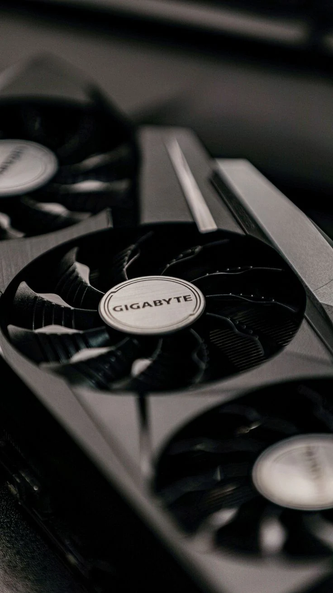
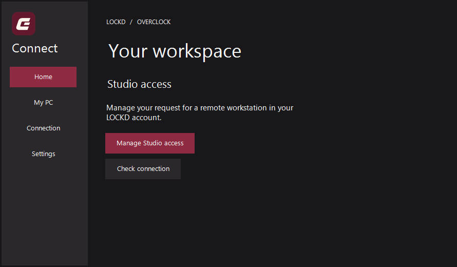

First pilot
Studio
Work on a 3D scene or render a project.
LOCKD // OVERCLOCK
Keep the computer you know. Request a remote workstation for 3D modelling, rendering and creative work.

Getting started
Studio is the first pilot, for creators in Kenya. You can also register interest in gaming or AI.
Use your LOCKD account to save your choice. You can change or withdraw it here.
Download Connect and check your connection to LOCKD. A request does not reserve a workstation.
First pilot
Work on a 3D scene or render a project.
Planned
Play PC games on remote hardware.
Planned
Run and train models on a remote computer.
Manage your Studio request and check your connection to LOCKD from your desktop.
Download for Windows Version 0.2.0 · Windows x64 · Standalone EXE
Studio pilot
Tell us what you’d like to use OVERCLOCK for.
Checking your account…